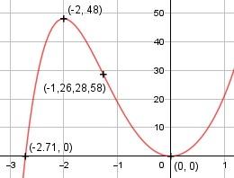

Aufgabe 64 f(x) = x5 + 20x2 f'(x) = 5x4 + 40x, f''(x) = 20x3 + 40, f'''(x) = 60x2 Definitionsbereich: -∞ < x < ∞ Wertebereich: -∞ < f(x) < ∞ Asymptoten: - Symmetrie zur y-Achse bzw. zum Punkt (0|0): f(-x) = (-x)5 + 20(-x)2 f(-x) = -x5 + 20x2 ≠ f(x) --> keine Achsensymmetrie -f(-x) = -(-x5 + 20x2) -f(-x) = x5 - 20x2 ≠ f(x) --> keine Punktsymmetrie Nullstellen: f(x) = 0 x5 + 20x2 = 0 x2 * (x3 + 20) = 0 x2 = 0 x1,2 = 0 (Berührpunkt, Extrempunkt) x3 + 20 = 0 |-20 x3 = -20 | x3,4,5 = -2,71 N1,2(0|0), N3,4,5(-2,71|0) Schnittpunkt mit der y-Achse: x = 0 f(0) = 05 + 20 * 02 = 0 Sy(0|0) Extrempunkte: f'(x) = 0 5x4 + 40x = 0 5x * (x3 + 8) = 0 5x = 0|:5 x1 = 0, f(0) = 0 x3 + 8 = 0 |-8 x3 = - 8 | x3,4,5 = -2 f(-2) = (-2)5 + 20 * (-2)2 = 48 f''(0) = 20 * 03 + 40 > 0 --> Tiefpunkt (0|0) f''(-2) = 20 * (-23) + 40 < 0 --> Hochpunkt (-2|48) Wendepunkte: f''(x) = 0 20x3 + 40 = 0 |-40 20x3 = -40 |:2 x3 = -2| x1,2,3 = -1,26 f(-1,26) = (-1,26)5 + 20 * (-1,26)2 = 28,58 f'''(-1,26) = 60 * (-1,26)2 ≠ 0 --> Wendepunkt (-1,26|28,58) Graph:
